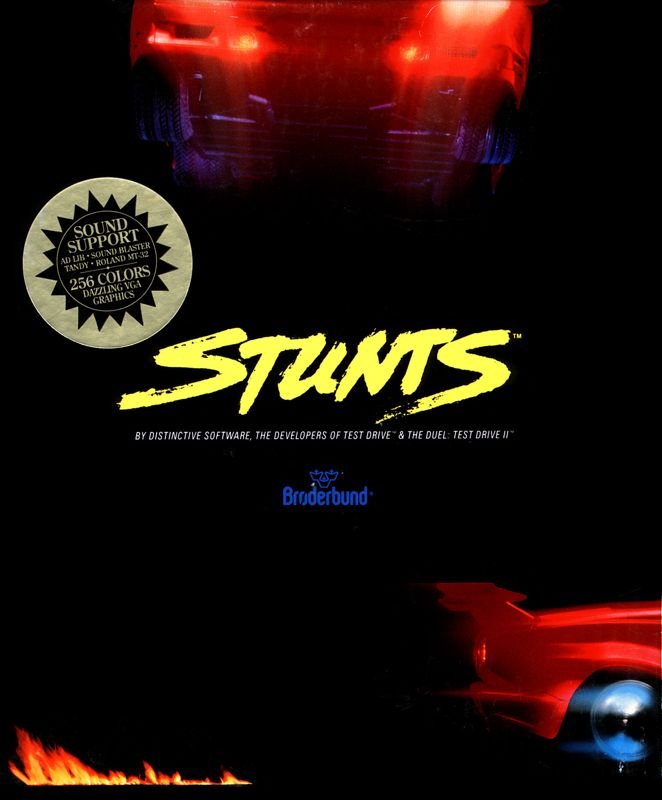

Play date: 1990
Developer: Distinctive Software
Publisher: Broderbund
Memo: Yellow indycar, track creations, collider bug.
Description: Stunts (also known as 4D Sports Driving) is a 3D racing video game developed by Distinctive Software and published by Broderbund in 1990. The game places emphasis on racing on stunt tracks and features a track editor. It is clearly influenced by the earlier arcade game Hard Drivin' and has many similar elements to the game Stunt Driver which was released the same year. The game is part of the 4D Sports series along with 4D Sports Tennis and 4D Sports Boxing.